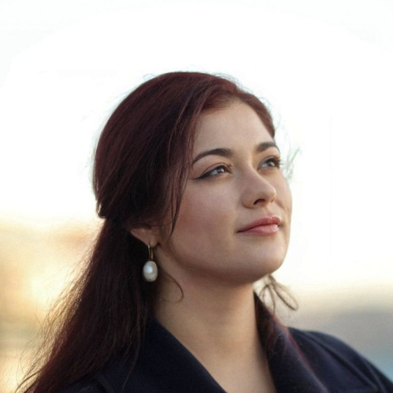

Тексты и публичная экспертиза
Пишу глубокие аналитические и просветительские тексты по социальным, политическим и культурным темам для медиа, образовательных и общественных проектов.
Работаю с темами, которые требуют внимательной исследовательской оптики, аккуратной работы с источниками и умения переводить сложные идеи в ясный, структурированный и увлекательный текст, который не теряет своей глубины.
Особенно сильна в темах, связанных с коммуникацией, активизмом, феминизмом, ЛГБТК+, социальной философией, историей общественных движений и социальными изменениями.
Благодаря академическому бэкграунду в истории и многолетней практике аналитической работы я умею глубоко разбираться в материале, видеть причинно-следственные связи и создавать тексты, которые помогают именно вашему читателю лучше понять многоуровневый контекст.
Избранное
Восемь текстов, по которым видно, как я работаю
- «Легко звездеть и растить четверых, когда есть бабки». Что говорит антиабортная активистка Наталья Москвитина и что отвечают ей россиянки
- «Я должна была представить, как ем собачью блевотину и целуюсь с женщиной». Истории квир-людей, прошедших через конверсионную терапию в России
- Точка сборки. Как эмигрантки из России развивают книжные места в новых странах, и зачем это нужно
- «Богородица стала мамой в 15 лет и была лучшей матерью». С чем сталкиваются беременные школьницы в России
- «Где пруфы?» Почему женщины составляют списки абьюзеров в сети и помогает ли это решить проблему насилия
- «Спрятать мерзких геев от нормальных людей». Как отвращение стало оружием гомофобии
- Тюрьмы, спорт, туалеты. Почему радикальные феминистки согласны с Трампом
- «Не все феминизмы одинаково полезны». Разбираемся в истории и современных тенденциях движения за права женщин
Библиография
Все публикации
Новая газета Европа
- Политическое лесбийство. Радикальный вызов патриархату
- Глубинные страхи Гогунского. Как спорить с сексистами на примере высказываний звезды сериала «Универ»
- «Спрятать мерзких геев от нормальных людей». Как отвращение стало оружием гомофобии
- «Где пруфы?» Почему женщины составляют списки абьюзеров в сети
- «Мы такие же, как все, только нам страшнее». Какую цену платят ЛГБТК+-родители за безопасность своих детей в школах и детских садах
- «Богородица стала мамой в 15 лет и была лучшей матерью». С чем сталкиваются беременные школьницы в России
- «Я должна была представить, как ем собачью блевотину и целуюсь с женщиной». Истории квир-людей, прошедших через конверсионную терапию
- Миллионные штрафы, сотни уголовных дел, одна жизнь. Как квир-люди «расплачивались» за своё существование в России
- «Очень не хочется терять это ощущение счастья». Истории квир-россиян, которые поженились в Нидерландах
- «Легко звездеть и растить четверых, когда есть бабки». Что говорит антиабортная активистка Наталья Москвитина
Гласная
- «Больше не хочу отношений». Что такое гетеропессимизм и почему женщины отказываются от новых романтических связей
- Точка сборки. Как эмигрантки из России развивают книжные места в новых странах
УЖ медиа
- От онтологии до секса с подругой. Как я вижу разнообразие отношений
- «Они знают умные и модные слова, но любое требование реального перераспределения ресурсов встречают с холодным скептицизмом». Кто сегодня формирует стандарт добродетели
- «Не все феминизмы одинаково полезны». Разбираемся в истории и современных тенденциях движения за права женщин
Perito
Послемедиа
ZELJANIEC
Эфиры
Вы можете пригласить меня на эфир или выступление
Выступаю как экспертка на подкастах, в прямых эфирах, конференциях и панельных дискуссиях. Даю комментарии по темам прав женщин и квир-людей как экспертка и правозащитница.
Записи
Примеры выступлений
Отзывы
Что говорят редакторки и коллеги
Таня задаёт очень точные вопросы, которые помогают человеку рассказать свою историю через чувства, а не через последовательность событий.
Надежда Юроваведущая ютуб-канала Новой газеты Европа
полный отзыв
Особенно ценным считаю сочетание мощной аналитики с добрым, человеческим подходом.

Анастасия Полозковажурналистка, редакторка и фем-активистка
полный отзыв